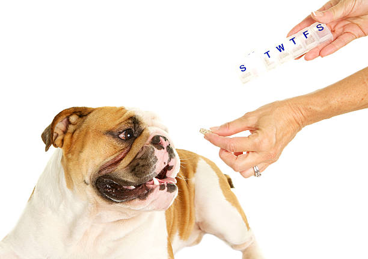
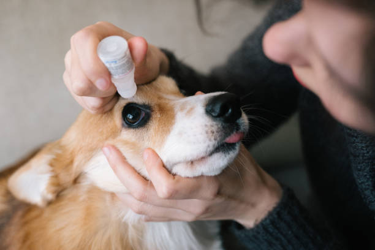

Los medicamentos son una parte importante en la vida de los animales, ya que estos pueden ser la diferencia entre la vida y la muerte de una mascota. Sin embargo, es importante tener en cuenta que los medicamentos también pueden tener efectos secundarios en los animales, por lo que es importante seguir las indicaciones del veterinario y administrar los medicamentos de forma adecuada.
Recientemente ha saltado a la actualidad un conflicto que llevaba tiempo gestándose entre el sector veterinario y el Gobierno español, a raíz de una polémica ley que limita el uso de medicamentos – en particular, antibióticos – que los profesionales veterinarios pueden recetar y administrar a los animales. Se trata del Real Decreto 666/2023, conocido popularmente como Ley del Medicamento o Ley de Medicamentos Veterinarios. Leer más
La Ley del Medicamento es una normativa que regula el uso de medicamentos en los animales, con el objetivo de proteger la salud de los animales y prevenir la aparición de resistencias antimicrobianas. La ley establece una serie de restricciones en el uso de medicamentos, en particular, antibióticos, para evitar su uso indiscriminado y reducir el riesgo de aparición de resistencias.
Leer más En España se han desatado fuertes protestas por parte de profesionales veterinarios y tutores de mascotas a raíz de la muerte en Galicia de una perra llamada Selva, cuyo tratamiento se vio frenado por las restricciones que impone la ley. Por otra parte, en Baleares, un veterinario ha sido sancionado con una multa de 90.000 euros por haber vendido medicamentos en la consulta sin atenerse al procedimiento que marca la normativa. Todo ello ha generado mucha preocupación por parte de veterinarios y otras personas, que piden que la ley sea derogada o modificada ya que pone en riesgo la vida de los animales.
Leer másTu opinión importa
Jorgito: Creo que los medicamentos son esenciales, pero deben usarse con cuidado.
Jaimito : Estoy de acuerdo con la ley, es importante evitar el uso indiscriminado de antibióticos.
Juanito: La ley debería ser más flexible para casos urgentes como el de Selva.
Luna:todos necesitamos una sanidad más justa.